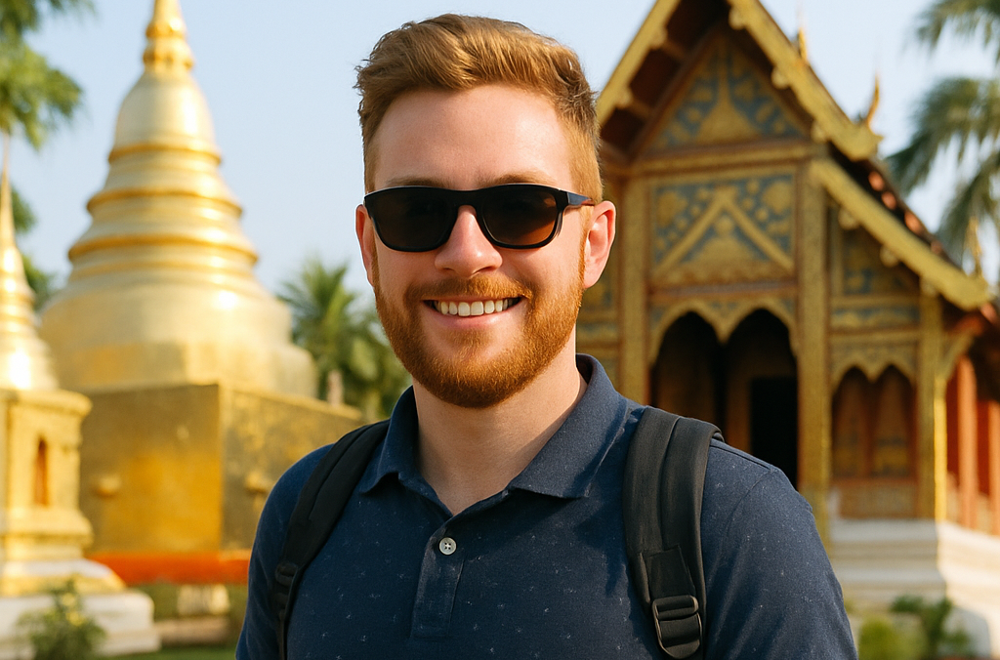
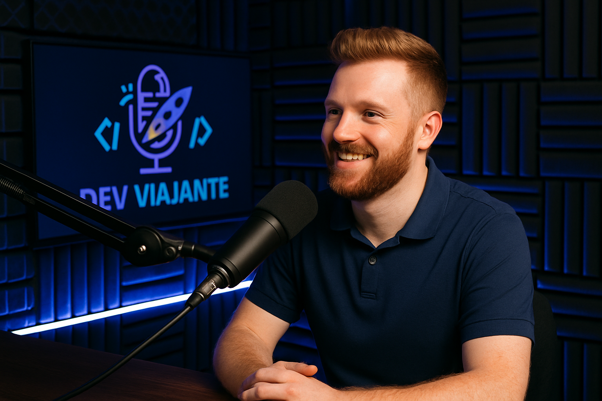

🎙 Dev Viajante estreia com um episódio inesquecível! Nosso primeiro convidado é ninguém menos que Lucas Ferreira, um desenvolvedor full stack que trocou o escritório pela estrada e hoje trabalha remotamente enquanto explora o mundo. Neste episódio piloto, embarcamos junto com ele em sua jornada mais recente até a vibrante cidade de Chiang Mai, na Tailândia — um verdadeiro paraíso para nômades digitais. Combinando código, cultura e conexões humanas, essa conversa mostra como é possível viver da tecnologia sem abrir mão da liberdade de viajar. Aperte o play e venha se inspirar!
 
Tópicos discutidos
- A jornada de transição:
- como Lucas saiu de um emprego CLT tradicional para trabalhar 100% remoto.
- Por que Chiang Mai?:
- motivos que levaram à escolha da Tailândia como destino inicial.
- Infraestrutura para nômades digitais:
- internet, coworkings, custo de vida e adaptação.
- Rotina de trabalho na estrada:
- equilíbrio entre produtividade e exploração cultural.
- Ferramentas e tecnologias favoritas:
- stack de desenvolvimento e apps essenciais para o dia a dia.
- Desafios da vida nômade:
- fuso horário, solidão e burocracias internacionais.
- Comunidade Dev pelo mundo:
- conexões, eventos locais e parcerias em outros países.
- Dicas para quem quer começar:
- conselhos práticos para quem sonha em trabalhar remotamente viajando.
- Planos futuros:
- os próximos destinos e projetos de Lucas como Dev Viajante.
- Bastidores do episódio:
- como foi gravar esse piloto em uma locação internacional.